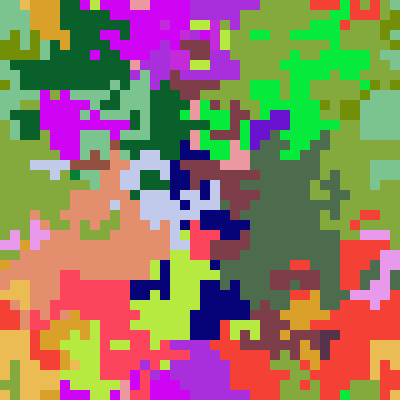

Solution for Programming Exercise 4.7
This page contains a sample solution to one of the exercises from Introduction to Programming Using Java.
Exercise 4.7:
For this exercise, you will do something even more interesting with the Mosaic class that was discussed in Section 4.7. (Again, don't forget that you will need Mosaic.java and MosaicCanvas.java to compile and run your program.)
The program that you write for this exercise should start by filling a mosaic with random colors. Then repeat the following until the user closes the mosaic window: Select one of the rectangles in the mosaic at random. Then select one of the neighboring rectangles—above it, below it, to the left of it, or to the right of it. Copy the color of the originally selected rectangle to the selected neighbor, so that the two rectangles now have the same color.
As this process is repeated over and over, it becomes more and more likely that neighboring squares will have the same color. The result is to build up larger color patches. On the other hand, once the last square of a given color disappears, there is no way for that color to ever reappear. (Extinction is forever!) If you let the program run long enough, eventually the entire mosaic will be one uniform color.
I will call the program RandomConvert, since the basic operation is to convert one square to be the same color as a neighboring square. An outline for the main program is easy:
Open a mosaic window Fill the mosaic with random colors while the window is open: Select one of the rectangles at random Convert the color of one of that rectangle's neighbors Short delay
We have already seen a subroutine for filling the mosaic with random color, in Subsection 4.7.2. I will also write a subroutine to do the second step in the while loop. There is some question about what it means to "select one of the rectangles at random." A rectangle in the mosaic is specified by a row number and a column number. We can select a random rectangle by choosing a row number and a column number at random. Assuming that ROWS and COLUMNS are constants that give the number of rows and the number of columns, we can do that by saying
int randomRow = (int)(ROWS * Math.random()); int randomColumn = (int)(COLUMNS * Math.random());
where I have declared each variable and initialized it in one step, as discussed in Subsection 4.8.1. For the "convert" subroutine to do its work, we will have to tell it which rectangle has been selected, so randomRow and randomColumn will be parameters to that subroutine. The code for the program's main() routine becomes:
Mosaic.open(ROWS, COLUMNS, SQUARE_SIZE, SQUARE_SIZE);
fillWithRandomColors();
while (Mosaic.isOpen()) {
int randomRow = (int)(ROWS * Math.random());
int randomColumn = (int)(COLUMNS * Math.random());
convertRandomNeighbor(randomRow, randomColumn);
// (I removed the call to Mosaic.delay(5) to speed up the program.)
}
All that remains is to write the convertRandomNeighbor() subroutine. This routine should pick a random neighbor of a given rectangle and change its color. A rectangle in the mosaic has four neighbors, above, below, to the left, and to the right. We can pick one at random by selecting a random integer less than four and using that integer to decide which neighbor to select. We have a problem, though, if the rectangle is on the edge of the mosaic. For example, if the rectangle is in the top row, then there is no neighbor above that rectangle in the mosaic. One solution to this problem is to wrap around to the bottom of the mosaic and use a square from the bottom row as the neighbor. Essentially, we think of the top of the mosaic as connected to the bottom and the left edge as connected to the right. We have seen something like this in Subsection 4.7.3, in the randomMove() subroutine. The convertRandomNeighbor() code can use some basic ideas from randomMove(). Here is a version of convertRandomNeighbor() that would work:
static void convertRandomNeighbor(int row, int col) {
/* Choose a random direction, and get the row and column
* numbers of the neighbor that lies in that direction. */
int neighborRow; // row number of selected neighbor
int neighborColumn; // column number of selected neighbor
int directionNum = (int)(4*Math.random()); // random direction;
switch (directionNum) {
case 0: // Choose neighbor above.
neighborColumn = col; // Neighbor is in the same column.
neighborRow = row - 1; // Subtract 1 to get neighbor's row number.
if (neighborRow < 0) // Neighbor's row number is outside the mosaic.
neighborRow = ROWS - 1; // So wrap around to bottom of the mosaic.
break;
case 1: // Choose neighbor to the right.
neighborRow = row; // Same row.
neighborColumn = col + 1; // Column to the right.
if (neighborColumn >= COLUMNS) // Outside the mosaic?
neighborColumn = 0; // Wrap around to the left edge
break;
case 2: // Choose neighbor below.
neighborColumn = col;
neighborRow = row + 1;
if (neighborRow >= ROWS)
neighborRow = 0;
break;
default: // Choose neighbor to the left.
neighborRow = row;
neighborColumn = col - 1;
if (neighborColumn < 0)
neighborColumn = COLUMNS - 1;
break;
}
/* Get the color components for position (row,col) */
int red = Mosaic.getRed(row,col);
int green = Mosaic.getGreen(row,col);
int blue = Mosaic.getBlue(row,col);
/* Change the color of the neighbor to color of the original square. */
Mosaic.setColor(neighborRow,neighborColumn,red,green,blue);
}
Note the use of a default case at the end of the switch statement. Saying "case 3" will not work here, because the computer would not be able to verify that values have definitely been assigned to neighborRow and neighborColumn.
In my program, I actually used a different algorithm that requires somewhat less code. My algorithm goes like this:
Get the color components for the rectangle at position (row,col). Modify the value of row or col to point to a neighboring rectangle. Set the color of position (row,col).
This is a little tricky, since the variables row and col are used both for getting the color and for setting it. But by the time row and col are used for setting the color, they are referring to a different rectangle. You can see my version of convertRandomNeighbor in the full source code listing below.
Here's a screenshot from my program after it was allowed to run for a while:

/**
* This program fills a mosaic with random colors. It then enters
* a loop in which it randomly selects one of the squares in the
* mosaic, then randomly selects one of the four neighbors of that
* square and converts the selected neighbor to the color of the
* originally selected square. The effect is to gradually build
* up larger patches of uniform color. The animation continues
* until the user closes the window. This program depends on
* the non-standard classes Mosaic and MosaicCanvas.
*/
public class RandomConvert {
final static int ROWS = 40; // Number of rows in the mosaic.
final static int COLUMNS = 40; // Number of columns in the mosaic.
final static int SQUARE_SIZE = 10; // Size of each square in the mosaic.
/**
* The main() routine opens the mosaic window, then enters into
* a loop in which it repeatedly converts the color of one square.
* The loop ends when the user closes the mosaic window.
*/
public static void main(String[] args) {
Mosaic.setUse3DEffect(false);
Mosaic.open(ROWS, COLUMNS, SQUARE_SIZE, SQUARE_SIZE);
fillWithRandomColors();
while (Mosaic.isOpen()) {
int randomRow = (int)(ROWS * Math.random());
int randomColumn = (int)(COLUMNS * Math.random());
convertRandomNeighbor(randomRow, randomColumn);
}
}
/**
* Set each square in the mosaic to be a randomly selected color.
*/
static void fillWithRandomColors() {
for (int row = 0; row < ROWS; row++) {
for (int col = 0; col < COLUMNS; col++) {
int r = (int)(256*Math.random());
int g = (int)(256*Math.random());
int b = (int)(256*Math.random());
Mosaic.setColor(row,col,r,g,b);
}
}
}
/**
* Select one of the neighbors of the square at position (row,column) in
* the mosaic. Change the color at position (row, column) to match the
* color of the selected neighbor. The neighbors of a square are the
* squares above, below, to the left, and to the right of the square.
* For squares on the edge of the mosaic, wrap around to the opposite
* edge.
*/
static void convertRandomNeighbor(int row, int col) {
/* Get the color components for position (row,col) */
int red = Mosaic.getRed(row,col);
int green = Mosaic.getGreen(row,col);
int blue = Mosaic.getBlue(row,col);
/* Choose a random direction, and change the value of row
* or col to refer to the neighbor that lies in that direction. */
int directionNum = (int)(4*Math.random());
switch (directionNum) {
case 0: // Choose neighbor above.
row--; // Move row number one row up.
if (row < 0) // row number is outside the mosaic.
row = ROWS - 1; // Wrap around to bottom of the mosaic.
break;
case 1: // Choose neighbor to the right.
col++;
if (col >= COLUMNS)
col = 0;
break;
case 2: // Choose neighbor below.
row++;
if (row >= ROWS)
row = 0;
break;
case 3: // Choose neighbor to the left.
col--;
if (col < 0)
col = COLUMNS - 1;
break;
}
/* Change the color of the neighbor to color of the original square. */
Mosaic.setColor(row,col,red,green,blue);
}
}